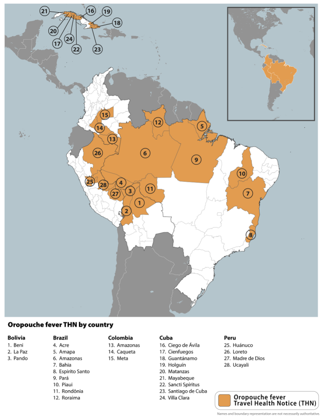
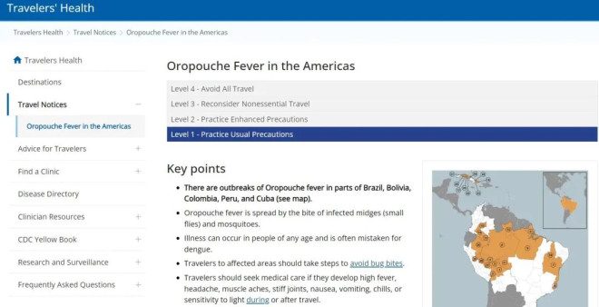
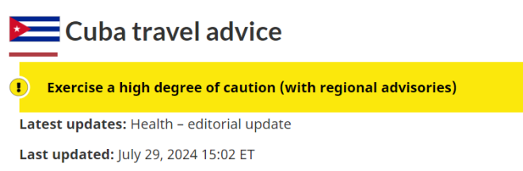
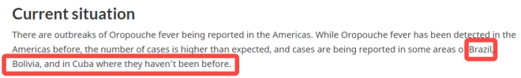

最近，又一种名为奥罗普切（Oropouche Virus）的病毒肆虐美洲，引起了全世界的警惕！
如今，全球正在目睹蚊媒疾病的激增，包括登革热、疟疾和西尼罗河病毒等。最近出现的奥罗普切病毒已经在巴西造成了两人死亡，同时也是全球首次出现死亡病例，凸显了该疾病带来的威胁。
据多家英文媒体综合报道，这是一种由奥罗普切病毒 (OROV) 引起的新兴传染病，主要通过吸血昆虫如蚊、蜢叮咬传播，导致急性疾病。
症状类似于登革热，包括发烧、头痛、肌肉和关节疼痛，以及皮疹。在严重情况下，还会发展为脑膜炎或脑炎。
奥罗普切病毒最初是在加勒比国家特立尼达和多巴哥共和国（Republic of Trinidad and Tobago）的一次发热性疾病爆发期间发现的，后来在多个南美洲和中美洲国家被发现，包括巴西、秘鲁和巴拿马，并在那里引发了严重的流行病。

根据世界卫生组织（WHO）的说法，奥罗普切热症状通常在感染后4-8天出现。发病突然，伴有发烧、头痛、关节和肌肉疼痛、发冷，并经常出现恶心和呕吐。虽然大多数病例在一周内痊愈，但严重病例可能导致脑膜炎，需要数周时间才可能恢复。
截至7月底，巴西奥罗普切热病例总数已经达到7,236，主要集中在亚马逊州和朗多尼亚州，跟去年相比有显著提升。去年总体病例数仅约为840例。
据报道，巴西两名死于奥罗普切病毒的患者分别是21岁和24岁的女子，她们此前没有潜在健康问题，患病后都出现了“与严重登革热非常相似的症状”，包括发烧、头痛和身体疼痛。
在首次出现症状四天后，21岁的女性患者开始出现鼻子、下体、牙龈出血。两天后，她在被送往医院后死亡；另一名24岁女子在入院数小时后因心脏骤停而死亡。
根据美国疾病控制和预防中心（CDC）的说法，奥罗普切病毒通常是一种自限性疾病，大多数患者在一周内完全康复。然而，在某些情况下，这种疾病可能会更严重。
疲劳和全身不适等症状在初次感染后可能会持续长达一个月。值得注意的是，尽管可能出现严重疾病，但绝大多数患者都会完全康复，不会产生长期健康后果。这种病毒造成的死亡极为罕见。
目前，奥罗普切热尚无特定的治疗方法或疫苗。治疗的重点是通过止痛药、退烧药和充足的液体来控制症状。
世界卫生组织提出了一些预防措施，包括使用蚊帐和驱虫设备等。
泛美卫生组织”高风险”警告：敦促各国加强预防监测
泛美卫生组织（PAHO）已经发布了流行病学警报，呼吁各国加强对奥罗普切病毒的监测和实验室诊断。
这一呼吁是在近期病例增加、疾病蔓延到新地区，以及报告首例与感染相关死亡病例后发出的。截至2024年7月底，美洲已经报告了8078例奥罗普切热确诊病例，其中2例死亡。
5个国家报告了病例：玻利维亚（356例）、巴西（7284例，其中2例死亡）、哥伦比亚（74例）、古巴（74例）和秘鲁（290例）。
尽管这种疾病在历史上被描述为轻度疾病，但其传播的地理分布和更严重病例的出现，凸显了加强监测和警告的必要性。
美国疾控中心（CDC）近期发布1级旅行警告。

加拿大发布最新旅行警告
目前，病毒似乎朝着北美“进军”，古巴公共卫生部报告了奥罗普切病毒疫情，这是古巴首次发现该病毒。
加拿大已经针对古巴更新了旅行警告，提醒人们前往该国旅行时“保持高度警惕”。

警告中写道，古巴正面临基本必需品的严重短缺，以及一种类似于登革热但没有任何可用疫苗的病毒性疾病的爆发。
通过受感染的蚋虫和蚊子叮咬传播的奥罗普切热病例继续蔓延。症状包括发烧、关节和肌肉疼痛，严重情况下可能会升级为无菌性脑膜炎。如果长时间在户外，旅行者将面临风险。
加拿大政府建议，鉴于当地供应短缺，旅行者应尽可能自给自足。建议携带水、零食和基本药物等必需品。为了预防奥罗普切热，应使用EPA批准的驱虫剂，并穿长袖衬衫、长裤和帽子，可以降低被叮咬的风险。
如果出现症状，请立即就医。
与此同时，加拿大还提醒前往巴西的旅客“保持高度谨慎”。
加拿大政府在一份提醒人们警惕美洲奥罗普切病毒的通知中写道：虽然美洲以前也曾发现过奥罗普切热，但近日的病例数高于预期，巴西、玻利维亚和古巴的一些地区也报告了病例，这些地区以前从未出现过病例。

通知还写道，“返回加拿大后，请继续监测你的健康状况。如果出现奥罗普切热症状，请寻求医疗护理，告诉医生您去过哪里。 ”
加拿大的华人们，如果近期刚好有出境游的打算，可要多加小心了！